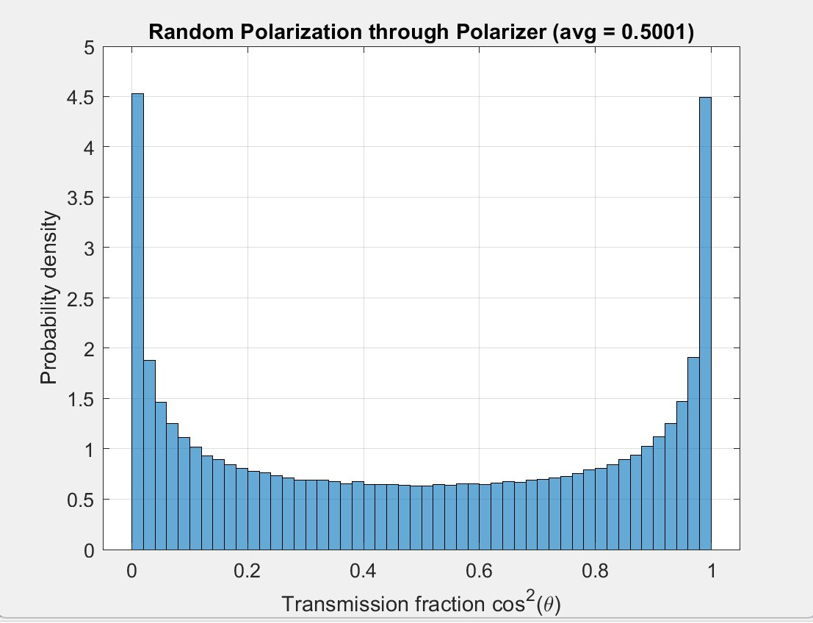
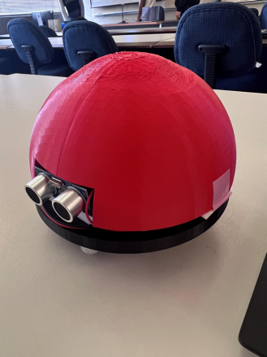
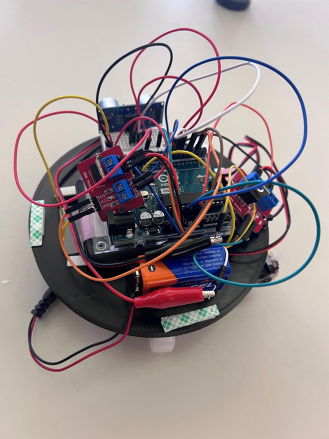

Selected Work
Projects
Coursework, research, and personal builds, grouped by discipline and ordered oldest to newest within each group. Expand a category for full write-ups, results, figures, and source.
Academic progression
How the work has moved from undergraduate hands-on builds, through analog circuit design, into graduate photonics and self-directed hardware.
-
Spring
2024UV-C Sterilization Robot, Silicon Thermal OxidationSUNY Polytechnic Institute, undergraduate. First full hardware build and first cleanroom process work. The oxidation research took second place at the SUNY Poly Student Project Showcase.
-
Summer
2024Personal Carrier RobotSummer Undergraduate Research Program. Motor drive, power rails, PID control, and vision-based tracking on a real platform.
-
Oct 2024
to Aug 2025Research Associate, AI roboticsNVIDIA Isaac stack, perception and motion planning, GPU workload profiling.
-
Spring
2025Bachelor's thesis on optical computingFirst sustained work in photonics, covering photonic integrated circuits and optical processing architectures.
-
May
2025BS Electrical Engineering conferredSUNY Polytechnic Institute, College of Engineering.
-
Fall
2025Graduate analog design at Binghamton8th-order Sallen-Key band-pass filter and a CMOS cascode amplifier reaching 86 dB, both worked out by hand before simulating.
-
Spring
2026Electro-optics and semiconductor lasersEnd-to-end fiber-optic link design and rate-equation modeling of a directly modulated laser.
-
Summer 2026
to presentConstant-current driver in KiCadSelf-directed. Moving from simulation into fabrication and bench measurement, heading toward a laser diode driver.
-
May
2027MS Electrical Engineering expectedBinghamton University, Physical Electronics and Electro-Optics.
Optics & Photonics 3 projects
Optical Computing, Memory & Data Centers
Bachelor's Thesis · SUNY Polytechnic Institute · Co-author (Processing)
Integrating Optical Technologies for Enhanced Processing, Memory, and Bandwidth Scalability in Next-Generation Computing. As Moore's Law approaches practical limits, this thesis examines how photonic technologies can move past the thermal, delay, and power-density constraints of silicon.
My section covered optical processing: photonic integrated circuits, all-optical computing architectures, and clock speeds beyond what electronic logic supports. Co-authors covered photonic memory and data-center scalability.
Technologies surveyed
Written with Owen Lawrence (memory) and Devin DiTucci (scalability / data centers) at SUNY Polytechnic Institute, Utica, NY.
Fiber-Optic Communication System
EECE 530 Electro-Optics · Binghamton University · MATLAB
Design and analysis of the key components in a fiber-optic link: launching light into multimode fiber, handling random polarization, modulating a binary signal, and recovering it at a photodiode. Four linked tasks that build into one end-to-end system.
Task 1: Fiber coupler
Single-lens system launching a laser into 50 µm multimode fiber (n₁ = 1.5, n₂ = 1.49, lens F = 3.5 mm, D = 2 mm).
| Quantity | Result |
|---|---|
| Numerical aperture | NA = 0.1729 |
| Acceptance angle | θ_max = 9.96° |
| Max coupling radius | r_max = 0.6147 mm |
| Power coupling efficiency | η ≈ 37.79% |
Efficiency is limited because the lens focuses rays across a wider angular spread than the fiber's acceptance cone will admit.
Task 2: Revised three-lens coupler
Redesigned with a three-lens arrangement that shrinks the beam so every ray arrives within θ_max, recovering the lost power.
| Quantity | Result |
|---|---|
| Required beam radius at L₃ | r₃ = 0.3511 mm |
| Lens separation | d₁ = 4.729 mm |
| Collimating lens focal length | F₂ = 1.229 mm |
| Radius of curvature (plano-convex) | R = 0.6145 mm |
Task 3: Random polarization through a polarizer
Malus's law applied to a randomly polarized source. Analytically, for θ uniform over [0, 2π], the expected transmission E[cos²θ] = ½. A 1,000,000-sample Monte Carlo simulation returned 0.5001, confirming the result.

MATLAB source: Monte Carlo polarization
% Task 3: Power transmitted through polarizer for random polarization
N = 1e6; % number of samples
theta = 2*pi*rand(N,1); % uniform random angles in [0, 2pi]
T = cos(theta).^2; % Malus's law transmission
avg_transmission = mean(T); % average power fraction
fprintf('Average transmission = %.4f (expected 0.5)\n', avg_transmission);
figure;
histogram(T, 50, 'Normalization', 'pdf');
xlabel('Transmission fraction cos^2(\theta)');
ylabel('Probability density');
title(sprintf('Random Polarization through Polarizer (avg = %.4f)', ...
avg_transmission));
grid on;Task 4: Modulation and end-to-end link
Full binary link: 5 mW laser at λ = 1.55 µm → vertical polarizer → electro-optic modulator (Vπ = 5 V) → quarter-wave plate → horizontal polarizer → multimode fiber → PIN photodiode (ηq = 80%).
| Bit | Drive | Transmission | Optical power | Photocurrent |
|---|---|---|---|---|
| '1' | +2.2 V | 0.9900 | 2.477 mW | 2.44 mA |
| '0' | −2.2 V | 0.00886 | 22.1 µW | 21.8 µA |
At 50 Mbps the intermodal dispersion budget allows a maximum fiber length of ≈ 297.9 m (delay per unit length 33.56 ns/km, half-bit-period criterion). Photodiode responsivity worked out to 0.998 A/W.
Semiconductor Laser Relaxation Oscillations
EECE 532 Advanced Semiconductor Lasers · Binghamton University · MATLAB
Numerical simulation of a directly modulated semiconductor laser using coupled rate equations for carrier and photon density. The device is biased just above threshold, pulsed to a higher drive current for 100 ps, then returned to bias. This is the same scenario a laser sees under direct modulation in a data link.
Rate equations
Carrier and photon densities are coupled through a gain term that includes compression:
dn/dt = I/(qV) − n/τ − Γ·G(n,s)·s
ds/dt = Γ·G(n,s)·s − s/τ_p + β·n/τ
G(n,s) = v_g · (dg/dn) · (n − n₀) / (1 + ε·s)Device parameters
| Parameter | Symbol | Value |
|---|---|---|
| Active region volume | V | 120 µm³ |
| Photon lifetime | τ_p | 4 ps |
| Carrier lifetime | τ | 1 ns |
| Spontaneous emission factor | β | 10⁻⁵ |
| Differential gain | dg/dn | 5×10⁻¹⁶ cm² |
| Gain compression | ε | 10⁻¹⁷ cm³ |
| Confinement factor | Γ | 0.30 |
| Transparency carrier density | n₀ | 10¹⁸ cm⁻³ |
Results
Threshold came out to n_th ≈ 1.19 × 10¹⁸ cm⁻³ and I_th ≈ 22.9 mA. Steady state at 1.1·I_th was found by integrating to convergence over 8 ns rather than assuming carrier clamping, so the transient starts from a self-consistent bias point.
When the current steps up, carrier density overshoots n_th before stimulated emission can respond. Once photon density spikes it clamps the carriers, triggering a damped oscillatory exchange, plus a second burst on the step back down. Relaxation oscillation frequency for this parameter set landed at ~5 to 15 GHz.


MATLAB source: rate equations and threshold
% Part (a): Threshold current
% Threshold condition: Gamma * vg * dgdn * (nth - n0) = 1/tau_p
delta_nth = 1 / (Gamma * vg * dgdn * tau_p);
nth = n0 + delta_nth;
I_th = q * V * nth / tau;
% Transient: 1.1*Ith -> 4*Ith for 100 ps -> back to 1.1*Ith
I_func = @(t) I_bias + (I_high - I_bias) * (t >= t_on & t <= t_off);
opts = odeset('RelTol', 1e-8, 'AbsTol', 1e-10, 'MaxStep', 0.2e-12);
t_eval = linspace(0, t_end, 8000);
[t_sol, y_sol] = ode45(@(t, y) rate_eqs(t, y, I_func, q, V, tau, tau_p, ...
beta, Gamma, vg, dgdn, n0, epsilon), t_eval, y0, opts);
function dydt = rate_eqs(t, y, I_func, q, V, tau, tau_p, beta, ...
Gamma, vg, dgdn, n0, epsilon)
n = max(y(1), 0);
s = max(y(2), 0);
I = I_func(t);
G = vg * dgdn * (n - n0) / (1 + epsilon * s);
dndt = I/(q*V) - n/tau - Gamma*G*s;
dsdt = Gamma*G*s - s/tau_p + beta*n/tau;
dydt = [dndt; dsdt];
endCircuits & Power 3 projects
8th-Order Sallen-Key Band-Pass Filter with Noise Rejection
EECE 501 Analog Circuit Design · Binghamton University · LTspice
An 8th-order band-pass filter built by cascading a 4th-order high-pass and a 4th-order low-pass biquad section, giving a 1 kHz to 50 kHz passband with more than 45 dB of stopband attenuation.
| Stage | Components | Gain |
|---|---|---|
| High-pass (4th order) | R = 15.9 kΩ, C = 10 nF | K₁ = 1.152 |
| Low-pass (4th order) | R = 3.18 kΩ, C = 1 nF | K₂ = 2.235 |
Stability was checked by solving each biquad's pole locations analytically and confirming all poles lie in the left half s-plane, then validating with a transient step response that decayed without oscillation.
The design was verified in LTspice with AC analysis from 1 Hz to 10 MHz and transient simulation, recovering a clean 30 kHz tone from a white-noise-corrupted input.
CMOS Cascode Amplifier with Active Current-Source Load
EECE 501 Analog Circuit Design · Binghamton University · LTspice
An NMOS cascode amplifier using an active current-source load in place of a resistive one. Swapping the load raises output resistance by orders of magnitude, and gain rises with it.
| Quantity | Value |
|---|---|
| Device sizing | W = 20 µm, L = 1 µm |
| Bias current | I_D = 1 mA |
| Transconductance (hand-calculated) | g_m = 2.83 mS |
| Output resistance per device | r_o ≈ 50 kΩ |
| Amplifier output resistance | ≈ 7.2 MΩ |
| Voltage gain | 86 dB |
Transconductance and output resistance were hand-calculated from SPICE Level-1 model parameters (KP = 200 µA/V², V_T = 1.0 V, V_ov = 0.707 V) before simulating, then gain and bandwidth were verified against LTspice AC analysis from 10 Hz to 100 MHz.
Constant-Current LED / Laser Diode Driver
Personal project · KiCad · In progress
A regulated LM317 constant-current driver designed in KiCad that holds output current constant independent of supply voltage. The set resistor fixes the current through I = 1.25 / R_set, so a 62 Ω resistor gives roughly 20 mA, with the regulator dissipating about 0.12 W from a 9 V supply, low enough to run without a heatsink.
The planned test is a supply sweep from 7 V to 12 V confirming output current stays flat, which is a line-regulation measurement. That same test carries over directly to the laser-diode version.
From there the board branches toward a protected laser-diode driver with current limiting and modulation. Laser diodes fail fast under current transients, so the protection circuitry is the real engineering content.
Robotics & Embedded Systems 2 projects
UV-C Sterilization Robot
CET 429 · SUNY Polytechnic Institute · Arduino
A team-built autonomous disinfecting robot that drives itself through a room while UV-C LEDs sterilize the surfaces it passes, intended to cut infection risk in shared spaces. The design brief was to keep it versatile and genuinely affordable rather than matching the cost of commercial units, so the whole robot came in under $150 in parts.
The chassis and shell were 3D printed, with a domed cover over a circular base that carries the drive wheels, the electronics stack, and forward-facing ultrasonic sensors for obstacle detection.


Bill of materials
| Component | Cost |
|---|---|
| UV-C LEDs (5 pc) | $27.06 |
| Arduino Nano microcontroller | $22.05 |
| Gravity Nano IO shield | $11.30 |
| DC motors (2) | $9.99 |
| 3.7 V battery | $17.99 |
| Arduino car kit chassis | $59.99 |
| Total | $148.29 |
Build schedule
| Phase | Dates |
|---|---|
| Planning | Jan 16 to Feb 6 |
| Parts procurement | Feb 7 to Mar 1 |
| Initial build and soldering | Mar 2 to 14 |
| Coding and troubleshooting | Mar 15 to Apr 16 |
| Finalizing and prep | Apr 17 to 24 |
Team project with Owen Lawrence, Leo Bruno, and Kaitlyn P.
AI-Powered Personal Carrier Robot
Summer Undergraduate Research Program (SURP) · SUNY Polytechnic Institute · Python
An autonomous robot that follows a specific person while carrying items over long distances, aimed at elderly users and anyone needing mobility assistance. The build combines computer vision, embedded control, and power electronics.
Motor drive and power
I built the motor-drive subsystem around an L298N H-bridge running from a dual-battery supply, keeping motor power and logic power on separate rails so switching transients on the motor side don't disturb the Raspberry Pi. Speed and direction are set by Raspberry Pi PWM, with PID closed-loop control maintaining a safe following distance.
Vision and navigation
A YOLO-based vision system segments the camera frame into directional zones of forward, backward, left, right, and stop. The robot continuously reprocesses target coordinates to adjust movement in real time. Ultrasonic and infrared sensors handle collision avoidance, and a servo controls the storage compartment lid.
Hardware
Software
Supported by SURP 2024, with thanks to Dr. Gunyaz Ablay and Mcdhellyne Edwards. The repository includes the official SURP research poster.
Semiconductors & Fabrication 1 project
Analysis of Kinetic Growth in Silicon Thermal Oxidation
Semiconductor Experimentation Research · SUNY Polytechnic Institute
A hands-on fabrication study of how silicon dioxide grows on silicon wafers, combining furnace processing, Deal-Grove modeling, and SEM characterization. SiO₂ is the gate oxide, insulator, and passivation layer that modern CMOS depends on, so controlling its thickness precisely is a core process-engineering problem.
Process
| Parameter | Value |
|---|---|
| Wafer diameter | 100 mm |
| Oxidation temperature | 975 °C |
| Oxidation duration | 20 hours |
| Atmosphere | Controlled O₂, inert cooldown |
| Resulting oxide thickness | 200 to 300 nm |
Modeling
Oxidation was simulated in nanoHUB Process Lab using the Deal-Grove linear-parabolic model across 850 °C, 975 °C, 1100 °C, and 1225 °C, studying oxide thickness against time and temperature. Arrhenius plots were used to estimate activation energy and characterize the reaction kinetics governing growth.
Characterization and findings
SEM imaging confirmed silicon and oxygen at the surface and the presence of the SiO₂ layer, and revealed nanowire structures that formed unexpectedly after oxidation. That discovery took second place at the 2024 SUNY Polytechnic Student Project Showcase and may warrant follow-up for nanoelectronics and sensing applications.
With Leo Bruno and Owen Lawrence. Faculty advisor: Dr. Iulian Gherasiou, SUNY Polytechnic Institute, College of Engineering.